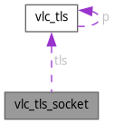

vlc_tls_socket Struct Reference
Collaboration diagram for vlc_tls_socket:

Data Fields | |
| struct vlc_tls | tls |
| int | fd |
| socklen_t | peerlen |
| struct sockaddr | peer [] |
Field Documentation
◆ fd
| int vlc_tls_socket::fd |
Referenced by vlc_tls_Connect(), vlc_tls_SocketAlloc(), and vlc_tls_SocketGetFD().
◆ peer
| struct sockaddr vlc_tls_socket::peer[] |
Referenced by vlc_tls_Connect(), vlc_tls_ConnectWrite(), and vlc_tls_SocketAlloc().
◆ peerlen
| socklen_t vlc_tls_socket::peerlen |
Referenced by vlc_tls_Connect(), vlc_tls_ConnectWrite(), and vlc_tls_SocketAlloc().
◆ tls
| struct vlc_tls vlc_tls_socket::tls |
Referenced by vlc_tls_SocketAlloc(), and vlc_tls_SocketGetFD().
The documentation for this struct was generated from the following file:
- src/network/tls.c
Generated by